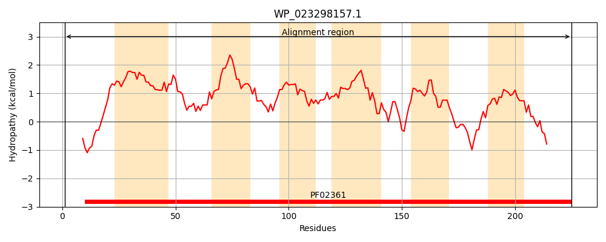
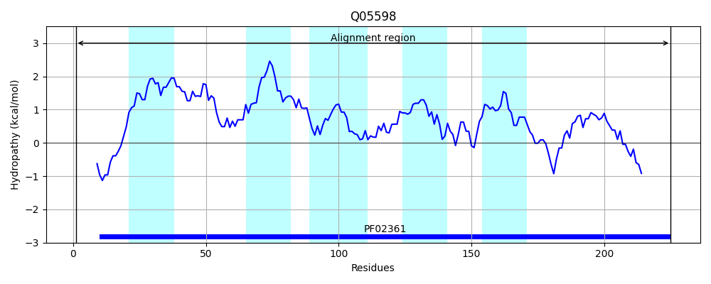
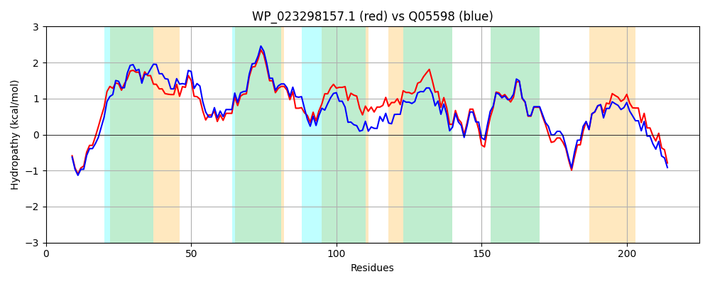

Hit Accession: Q05598
Hit TCID: 3.A.1.23.6
Hit Description: gnl|BL_ORD_ID|12212 gnl|TC-DB|Q05598|3.A.1.23.6 Cobalt transport protein CBIQ - Salmonella typhimurium.
Mach Len: 225
e:0.000000
Query TMS Count : 6
Hit TMS Count: 5
TMS-Overlap Score: 4.250000
Predicted Substrates:CHEBI:23337;cobalt(2+)
BLAST Alignment:
Score: 919 , Bit scores: 358 bits, E-value: 2.3e-127, Alignment length: 225, Percentage identity: 75
Query: 1 MTGFDRLSYQSRWLQVAPERKFLLWLLLMVLAFTLPAWGQALTLALTAALTCWLLRVSFWRWCRWMALPFGFLLVGVLTIVFSVSRDPQMLLASLRLGAFSIGISAPGLAVAGETFWRSLAAMAATLWLVLNLPFPQLIILLKRGRVPRLLTEQILLTWRFIFILLDEAMAIHRAQTLRFGYGSVPQGYRSLAMLVGLLFTRVLLRYQQMSTALDIKLYQGDFHL 225
MTG DRLSYQSRW VAP+RKFLLWL +M+LAF LP GQ + L + A L+CWLLR+S WRWCRWMA+PFGFLLVGV+TI+FS+SR+PQMLLA + +G + IGI+ G+ A ETFWRSL A++ATLWLV+NLPFPQLI LLKR +PRLLTEQILLTWRF+FILLDEA+AI RAQTLRFGY S+P GYRSLAML GLLFTRVL+RYQQM+T LDIKLYQGDFHL
Sbjct: 1 MTGLDRLSYQSRWAHVAPQRKFLLWLAMMILAFVLPPVGQGIELLIIAGLSCWLLRISLWRWCRWMAIPFGFLLVGVITIIFSISREPQMLLAGISVGPYWIGITRAGVVTANETFWRSLTALSATLWLVMNLPFPQLISLLKRAHIPRLLTEQILLTWRFLFILLDEAVAIRRAQTLRFGYCSLPNGYRSLAMLAGLLFTRVLMRYQQMTTTLDIKLYQGDFHL 225 | Protein Hydropathy Plots: |
|---|
|  |  |
Pairwise Alignment-Hydropathy Plot:
|
|---|
|  |